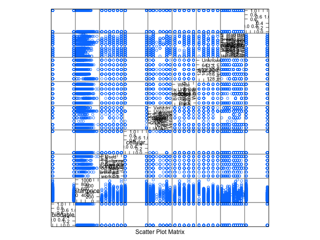
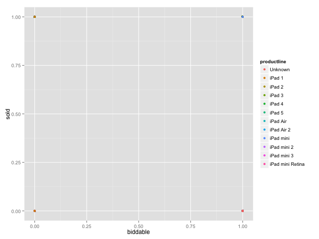

Kaggle Competition. 15.071x - The Analytics Edge (Summer 2015).
Table of Contents
- 1. Introduction
- 2. Test your analytics skills by predicting which iPads listed on eBay will be sold
- 3. Understanding the data
- 3.1. Clear workspace for initialization purposes
- 3.2. Download the data sets
- 3.3. Load the data sets
- 3.4. File descriptions
- 3.5. Data fields or data features available
- 3.6. Load the necessary libraries
- 3.7. Inspecting the data set
- 3.8. Preprocessing the data
- 3.9. Understanding each type and distribution of the data
- 3.10. The dummy variable creation
- 3.11. Partitioning the data
- 4. Machine Learning Models
- 5. Prepare the CSV file for submission
This is the document for the Kaggle competition for the Analytics Edge course from MIT.
1 Introduction
1.1 Welcome to the Kaggle Competition!
For the next three weeks, you will be participating in a competition on Kaggle. You should have already set up a Kaggle account (this was the last component of Unit 6). When the competition is over, you will be able to check your grade on the competition by going to your Progress page.
We have created two R script files to help you get started on this competition. The first script (on the next page), is intended to help you get started by building a simple logistic regression model and preparing the results for submission on Kaggle. The second script (on the following page), is designed to help you deal with the text data provided in this competition. We highly recommend that you carefully go through both of these script files, and refer to them during the competition.
If you get stuck or have questions, please use the Discussion forum on the edX site for this class. Remember though that the standard discussion forum rules apply. You should not ask for answers or give any answers on the forum.
Once you are ready, go ahead and get started by heading to the competition page on Kaggle. Note that this competition is a private competition only for students in 15.071x. Please do not distribute this link to people who are not enrolled in this class.
Good luck!
1.2 Getting started on Kaggle
If you have never participated in a Kaggle competition before, or if you just want some help getting started, we have created this R script file to help you get started. It shows you how to prepare a submission file for a simple logistic regression model, and how to get the most out of the date/time variable in the dataset.
Before going through the script file, please explore the Kaggle competition by following the link on the previous page. There are several very important pages in the competition:
- The "Data" page of the competition describes the data and gives you links to download the data.
- The "Evaluation" page is where you will learn how the competition is graded and how to make submissions.
- The "Rules" page outlines some very important rules for the competition. Please keep in mind that all of your submissions should reflect the results of your own analytical models, built using the data provided on the Kaggle site. While you can use the discussion forum to ask questions and get help, the standard rules apply. Please do not ask for or give solutions to the competition. We will be checking submissions for signs of copying, either from your classmates or from outside sources.
- When you are ready to make a submission, the "Make a Submission" page is where you can submit your solution. Note that you can make up to 5 submissions each day, so don't hesitate to get creative and try out many different models!
If you have questions about the logistics of the competition, or need help understanding the provided script file, please go to the Discussion forum by using the link below.
Remember that this script file is just designed to help you get started. You will need to build better models to do well in the competition!
1.3 Dealing with the text data
The data for this competition has a few variables composed of unstructured text data. You should be comfortable using the bag of words approach on text data from Unit 5, and we want to encourage you to use this data to improve your predictive models. However, you need to deal with the text data for this competition in a slightly different way from how we have dealt with text data in the past, because it is already split into a training set and a test set.
This R script file is designed to help you get started working with some the text data provided in the eBay dataset. If you have any questions about the approach used in the script file, please go to the Dicussion forum to get help by following the link below.
Remember that this script file is just designed to help you get started. You will need to build better models to do well in the competition!
1.4 Example R script
1.4.1 KAGGLE COMPETITION - GETTING STARTED
This script file is intended to help you get started on the Kaggle platform, and to show you how to make a submission to the competition.
1.4.2 Let's start by reading the data into R
Make sure you have downloaded these files from the Kaggle website, and have navigated to the directory where you saved the files on your computer
We are adding in the argument stringsAsFactors = FALSE, since we have
some text fields
eBayDS1 <- read.csv("../data/eBayiPadTrain.csv", stringsAsFactors = FALSE) eBayValidation1 <- read.csv("../data/eBayiPadTest.csv", stringsAsFactors = FALSE)
We will just create a simple logistic regression model, to predict Sold using Price:
SimpleMod <- glm(sold ~ startprice, data = eBayDS1, family = binomial)
And then make predictions on the test set:
PredTest <- predict(SimpleMod, newdata = eBayValidation1, type = "response")
We can't compute the accuracy or AUC on the test set ourselves,
since we don't have the dependent variable on the test set (you can
compute it on the training set though!).
However, you can submit the file on Kaggle to see how well the model performs. You can make up to 5 submissions per day, so don't hesitate to just upload a solution to see how you did.
Let's prepare a submission file for Kaggle (for more about this, see the "Evaluation" page on the competition site):
MySubmission <- data.frame(UniqueID = eBayValidation$UniqueID, Probability1 = PredTest) write.csv(MySubmission, "../data/SubmissionSimpleLogV1.csv", row.names = FALSE)
You should upload the submission SubmissionSimpleLog.csv on the
Kaggle website to use this as a submission to the competition
This model was just designed to help you get started - to do well in the competition, you will need to build better models!
2 Test your analytics skills by predicting which iPads listed on eBay will be sold
IMPORTANT NOTE: This competition is only open to students of the MITx free, online course 15.071x - The Analytics Edge.
What makes an eBay listing successful?
Sellers on online auction websites need to understand the characteristics of a successful item listing to maximize their revenue. Buyers might also be interested in understanding which listings are less attractive so as to score a good deal. In this competition, we challenge you to develop an analytics model that will help buyers and sellers predict the sales success of a set of eBay listings for Apple iPads from spring 2015.
The following screenshot shows an example of iPad listings on eBay:

To download the data and learn how this competition works, please be sure to read the "Data" page, as well as the "Evaluation" page, which can both be found in the panel on the left.
2.1 Acknowledgments
This competition is brought to you by MITx and edX.
3 Understanding the data
3.1 Clear workspace for initialization purposes
As first step we will reset all the workspace
writeLines("\n :: clearing workspace...") rm(list = ls(all = TRUE))
:: clearing workspace...
3.2 Download the data sets
In this part we can download the data
if(!file.exists("../data")) { dir.create("../data") } fileUrl <- c("https://inclass.kaggle.com/c/15-071x-the-analytics-edge-summer-2015/download/eBayiPadTest.csv", "https://inclass.kaggle.com/c/15-071x-the-analytics-edge-summer-2015/download/eBayiPadTrain.csv", "https://inclass.kaggle.com/c/15-071x-the-analytics-edge-summer-2015/download/SampleSubmission.csv") fileName <- c("eBayiPadTest.csv", "eBayiPadTrain.csv", "SampleSubmission.csv") dataPath <- "../data" for(i in 1:3) { filePath <- paste(dataPath, fileName[i], sep = "/") if(!file.exists(filePath)) { download.file(fileUrl[i], destfile = filePath, method = "curl") } } writeLines("\n :: Files downloaded...")
:: Files downloaded...
3.3 Load the data sets
We need to investigate the best way to load the data, in this case a series of factor features can improve the performance of the algorithms
eBayDS <- read.csv("../data/eBayiPadTrain.csv", stringsAsFactors = FALSE) eBayValidation <- read.csv("../data/eBayiPadTest.csv", stringsAsFactors = FALSE)
3.4 File descriptions
The data provided for this competition is split into two files:
- eBayiPadTrain.csv = the training data set. It consists of 1861 listings.
- eBayiPadTest.csv = the testing data set. It consists of 798 listings.
- We have also provided a sample submission file, SampleSubmission.csv. This file gives an example of the format of submission files (see the Evaluation page for more information). The data for this competition comes from eBay.com.
3.5 Data fields or data features available
The dependent variable in this problem is the variable sold, which labels if an iPad listed on the eBay site was sold (equal to 1 if it did, and 0 if it did not). The dependent variable is provided in the training data set, but not the testing dataset. This is an important difference from what you are used to - you will not be able to see how well your model does on the test set until you make a submission on Kaggle.
The independent variables consist of 9 pieces of product data available at the time the iPad listing is posted, and a unique identifier:
- description = The text description of the product provided by the seller.
- biddable = Whether this is an auction (biddable=1) or a sale with a fixed price (biddable=0).
- startprice = The start price (in US Dollars) for the auction (if biddable=1) or the sale price (if biddable=0).
- condition = The condition of the product (new, used, etc.)
- cellular = Whether the iPad has cellular connectivity (cellular=1) or not (cellular=0).
- carrier = The cellular carrier for which the iPad is equipped (if cellular=1); listed as "None" if cellular=0.
- color = The color of the iPad.
- storage = The iPad's storage capacity (in gigabytes).
- productline = The name of the product being sold.
3.6 Load the necessary libraries
writeLines("\n :: Loading the necessary libraries...") library(caret) # ML interface to many # functions library(ggplot2) # Graphical libraries library(caTools) # Partition data sets library(parallel) # Parallel computation library(mice) # Imputation library library(ROCR) # ROCS for AUC calculation library(randomForest) # Random Forest library library(pROC) # ROC calculations library(gbm) # gbm algorithm library(parallel) # Multicore calculations
:: Loading the necessary libraries...
3.7 Inspecting the data set
Lets begin researching in the training data set.
writeLines(" The structure of the training data set:")
str(eBayDS)
The structure of the training data set:
'data.frame': 1861 obs. of 11 variables:
$ description: chr "iPad is in 8.5+ out of 10 cosmetic condition!" "Previously used, please read description. May show signs of use such as scratches to the screen and " "" "" ...
$ biddable : int 0 1 0 0 0 1 1 0 1 1 ...
$ startprice : num 159.99 0.99 199.99 235 199.99 ...
$ condition : chr "Used" "Used" "Used" "New other (see details)" ...
$ cellular : chr "0" "1" "0" "0" ...
$ carrier : chr "None" "Verizon" "None" "None" ...
$ color : chr "Black" "Unknown" "White" "Unknown" ...
$ storage : chr "16" "16" "16" "16" ...
$ productline: chr "iPad 2" "iPad 2" "iPad 4" "iPad mini 2" ...
$ sold : int 0 1 1 0 0 1 1 0 1 1 ...
$ UniqueID : int 10001 10002 10003 10004 10005 10006 10007 10008 10009 10010 ...
3.8 Preprocessing the data
In this part we can try with different types for the data in order to have a better understanding of the data and to have the probability to improve the models. We can assume that some default values must be changed to the right type.
3.8.1 Training data set
eBayDS$condition <- as.factor(eBayDS$condition) eBayDS$cellular <- as.integer(eBayDS$cellular) eBayDS$carrier <- as.factor(eBayDS$carrier) eBayDS$color <- as.factor(eBayDS$color) eBayDS$storage <- as.factor(eBayDS$storage) eBayDS$productline <- as.factor(eBayDS$productline) ## eBayDS$sold <- as.factor(eBayDS$sold) writeLines("\n :: New structure of the original training set:") str(eBayDS)
Warning message: NAs introduced by coercion :: New structure of the original training set: 'data.frame': 1861 obs. of 11 variables: $ description: chr "iPad is in 8.5+ out of 10 cosmetic condition!" "Previously used, please read description. May show signs of use such as scratches to the screen and " "" "" ... $ biddable : int 0 1 0 0 0 1 1 0 1 1 ... $ startprice : num 159.99 0.99 199.99 235 199.99 ... $ condition : Factor w/ 6 levels "For parts or not working",..: 6 6 6 4 5 6 3 3 6 6 ... $ cellular : int 0 1 0 0 NA 1 0 0 1 0 ... $ carrier : Factor w/ 7 levels "AT&T","None",..: 2 7 2 2 6 1 2 2 6 2 ... $ color : Factor w/ 5 levels "Black","Gold",..: 1 4 5 4 4 3 3 5 5 5 ... $ storage : Factor w/ 5 levels "128","16","32",..: 2 2 2 2 5 3 2 2 4 3 ... $ productline: Factor w/ 12 levels "iPad 1","iPad 2",..: 2 2 4 9 12 9 8 10 1 4 ... $ sold : int 0 1 1 0 0 1 1 0 1 1 ... $ UniqueID : int 10001 10002 10003 10004 10005 10006 10007 10008 10009 10010 ...
3.8.2 Validation data set
eBayValidation$condition <- as.factor(eBayValidation$condition) eBayValidation$cellular <- as.integer(eBayValidation$cellular) eBayValidation$carrier <- as.factor(eBayValidation$carrier) eBayValidation$color <- as.factor(eBayValidation$color) eBayValidation$storage <- as.factor(eBayValidation$storage) eBayValidation$productline <- as.factor(eBayValidation$productline) ## eBayValidation$sold <- as.factor(eBayValidation$sold) writeLines("\n :: New structure of the original training set:") str(eBayValidation)
Warning message: NAs introduced by coercion :: New structure of the original training set: 'data.frame': 798 obs. of 10 variables: $ description: chr "like new" "Item is in great shape. I upgraded to the iPad Air 2 and don't need the mini any longer, even though " "This iPad is working and is tested 100%. It runs great. It is in good condition. Cracked digitizer." "" ... $ biddable : int 0 0 0 1 0 0 0 0 0 1 ... $ startprice : num 105 195 220 100 211 ... $ condition : Factor w/ 6 levels "For parts or not working",..: 6 6 6 6 2 4 5 6 6 6 ... $ cellular : int 1 0 0 0 0 0 0 0 0 0 ... $ carrier : Factor w/ 7 levels "AT&T","None",..: 1 2 2 2 2 2 2 2 2 2 ... $ color : Factor w/ 5 levels "Black","Gold",..: 4 4 4 4 1 2 1 4 1 4 ... $ storage : Factor w/ 5 levels "128","16","32",..: 3 2 4 2 3 4 3 2 2 3 ... $ productline: Factor w/ 10 levels "iPad 1","iPad 2",..: 1 8 3 7 3 6 1 4 3 1 ... $ UniqueID : int 11862 11863 11864 11865 11866 11867 11868 11869 11870 11871 ...
3.8.3 Imputing the NA values in the training dataset
Lets research about the NA values and their impact in the ML road map
writeLines("\n :: Summary of the original training data set:")
summary(eBayDS)
:: Summary of the original training data set:
description biddable startprice
Length:1861 Min. :0.0000 Min. : 0.01
Class :character 1st Qu.:0.0000 1st Qu.: 80.00
Mode :character Median :0.0000 Median :179.99
Mean :0.4498 Mean :211.18
3rd Qu.:1.0000 3rd Qu.:300.00
Max. :1.0000 Max. :999.00
condition cellular carrier
For parts or not working: 181 Min. :0.0000 AT&T : 206
Manufacturer refurbished: 39 1st Qu.:0.0000 None :1111
New : 289 Median :0.0000 Other : 3
New other (see details) : 85 Mean :0.3196 Sprint : 30
Seller refurbished : 109 3rd Qu.:1.0000 T-Mobile: 19
Used :1158 Max. :1.0000 Unknown : 348
NA's :234 Verizon : 144
color storage productline sold
Black :425 128 : 90 iPad 2 :286 Min. :0.0000
Gold : 77 16 :934 iPad mini :277 1st Qu.:0.0000
Space Gray:202 32 :340 iPad 1 :227 Median :0.0000
Unknown :708 64 :314 Unknown :204 Mean :0.4621
White :449 Unknown:183 iPad Air :180 3rd Qu.:1.0000
iPad Air 2:171 Max. :1.0000
(Other) :516
UniqueID
Min. :10001
1st Qu.:10466
Median :10931
Mean :10931
3rd Qu.:11396
Max. :11861
The exist NA values have some serious problems in the CSV generation.
We can work with some imputation algorithms in order to substitute the NA values.
writeLines("\n :: Multiple imputation") eBaySimple <- eBayDS[c("UniqueID", "biddable", "startprice", "condition", "cellular", "storage", "productline")] summary(eBaySimple)
:: Multiple imputation
UniqueID biddable startprice
Min. :10001 Min. :0.0000 Min. : 0.01
1st Qu.:10466 1st Qu.:0.0000 1st Qu.: 80.00
Median :10931 Median :0.0000 Median :179.99
Mean :10931 Mean :0.4498 Mean :211.18
3rd Qu.:11396 3rd Qu.:1.0000 3rd Qu.:300.00
Max. :11861 Max. :1.0000 Max. :999.00
condition cellular storage
For parts or not working: 181 Min. :0.0000 128 : 90
Manufacturer refurbished: 39 1st Qu.:0.0000 16 :934
New : 289 Median :0.0000 32 :340
New other (see details) : 85 Mean :0.3196 64 :314
Seller refurbished : 109 3rd Qu.:1.0000 Unknown:183
Used :1158 Max. :1.0000
NA's :234
productline
iPad 2 :286
iPad mini :277
iPad 1 :227
Unknown :204
iPad Air :180
iPad Air 2:171
(Other) :516
Lets impute the data in order to have a better response.
set.seed(pi)
imputed <- complete(mice(eBaySimple))
summary(imputed)
iter imp variable
1 1 cellular
1 2 cellular
1 3 cellular
1 4 cellular
1 5 cellular
2 1 cellular
2 2 cellular
2 3 cellular
2 4 cellular
2 5 cellular
3 1 cellular
3 2 cellular
3 3 cellular
3 4 cellular
3 5 cellular
4 1 cellular
4 2 cellular
4 3 cellular
4 4 cellular
4 5 cellular
5 1 cellular
5 2 cellular
5 3 cellular
5 4 cellular
5 5 cellular
UniqueID biddable startprice
Min. :10001 Min. :0.0000 Min. : 0.01
1st Qu.:10466 1st Qu.:0.0000 1st Qu.: 80.00
Median :10931 Median :0.0000 Median :179.99
Mean :10931 Mean :0.4498 Mean :211.18
3rd Qu.:11396 3rd Qu.:1.0000 3rd Qu.:300.00
Max. :11861 Max. :1.0000 Max. :999.00
condition cellular storage
For parts or not working: 181 Min. :0.0000 128 : 90
Manufacturer refurbished: 39 1st Qu.:0.0000 16 :934
New : 289 Median :0.0000 32 :340
New other (see details) : 85 Mean :0.3052 64 :314
Seller refurbished : 109 3rd Qu.:1.0000 Unknown:183
Used :1158 Max. :1.0000
productline
iPad 2 :286
iPad mini :277
iPad 1 :227
Unknown :204
iPad Air :180
iPad Air 2:171
(Other) :516
Lets substitute the imputed values in the original dataframe
writeLines("\n :: Substitute the original values of storage with the imputed values:") eBayDS$storage <- imputed$storage eBayDS$cellular <- imputed$cellular summary(eBayDS)
:: Substitute the original values of storage with the imputed values:
description biddable startprice
Length:1861 Min. :0.0000 Min. : 0.01
Class :character 1st Qu.:0.0000 1st Qu.: 80.00
Mode :character Median :0.0000 Median :179.99
Mean :0.4498 Mean :211.18
3rd Qu.:1.0000 3rd Qu.:300.00
Max. :1.0000 Max. :999.00
condition cellular carrier
For parts or not working: 181 Min. :0.0000 AT&T : 206
Manufacturer refurbished: 39 1st Qu.:0.0000 None :1111
New : 289 Median :0.0000 Other : 3
New other (see details) : 85 Mean :0.3052 Sprint : 30
Seller refurbished : 109 3rd Qu.:1.0000 T-Mobile: 19
Used :1158 Max. :1.0000 Unknown : 348
Verizon : 144
color storage productline sold
Black :425 128 : 90 iPad 2 :286 Min. :0.0000
Gold : 77 16 :934 iPad mini :277 1st Qu.:0.0000
Space Gray:202 32 :340 iPad 1 :227 Median :0.0000
Unknown :708 64 :314 Unknown :204 Mean :0.4621
White :449 Unknown:183 iPad Air :180 3rd Qu.:1.0000
iPad Air 2:171 Max. :1.0000
(Other) :516
UniqueID
Min. :10001
1st Qu.:10466
Median :10931
Mean :10931
3rd Qu.:11396
Max. :11861
3.8.4 Imputing the NA values in the validation dataset
Lets create a dataframe with the factor/character features
writeLines("\n :: Multiple imputation") eBaySimple <- eBayValidation[c("UniqueID", "biddable", "startprice", "condition", "cellular", "storage", "productline")] summary(eBaySimple)
:: Multiple imputation
UniqueID biddable startprice
Min. :11862 Min. :0.0000 Min. : 0.01
1st Qu.:12061 1st Qu.:0.0000 1st Qu.: 89.24
Median :12260 Median :0.0000 Median : 179.00
Mean :12260 Mean :0.4712 Mean : 208.64
3rd Qu.:12460 3rd Qu.:1.0000 3rd Qu.: 289.00
Max. :12659 Max. :1.0000 Max. : 999.99
condition cellular storage productline
For parts or not working: 83 Min. :0.0000 128 : 38 iPad 2 :154
Manufacturer refurbished: 16 1st Qu.:0.0000 16 :394 iPad mini:111
New :113 Median :0.0000 32 :138 Unknown : 92
New other (see details) : 43 Mean :0.2938 64 :147 iPad 1 : 88
Seller refurbished : 52 3rd Qu.:1.0000 Unknown: 81 iPad Air : 74
Used :491 Max. :1.0000 iPad 4 : 68
NA's :107 (Other) :211
Lets impute the data in order to have a better response.
set.seed(pi)
imputed <- complete(mice(eBaySimple))
summary(imputed)
iter imp variable
1 1 cellular
1 2 cellular
1 3 cellular
1 4 cellular
1 5 cellular
2 1 cellular
2 2 cellular
2 3 cellular
2 4 cellular
2 5 cellular
3 1 cellular
3 2 cellular
3 3 cellular
3 4 cellular
3 5 cellular
4 1 cellular
4 2 cellular
4 3 cellular
4 4 cellular
4 5 cellular
5 1 cellular
5 2 cellular
5 3 cellular
5 4 cellular
5 5 cellular
UniqueID biddable startprice
Min. :11862 Min. :0.0000 Min. : 0.01
1st Qu.:12061 1st Qu.:0.0000 1st Qu.: 89.24
Median :12260 Median :0.0000 Median : 179.00
Mean :12260 Mean :0.4712 Mean : 208.64
3rd Qu.:12460 3rd Qu.:1.0000 3rd Qu.: 289.00
Max. :12659 Max. :1.0000 Max. : 999.99
condition cellular storage productline
For parts or not working: 83 Min. :0.0000 128 : 38 iPad 2 :154
Manufacturer refurbished: 16 1st Qu.:0.0000 16 :394 iPad mini:111
New :113 Median :0.0000 32 :138 Unknown : 92
New other (see details) : 43 Mean :0.2895 64 :147 iPad 1 : 88
Seller refurbished : 52 3rd Qu.:1.0000 Unknown: 81 iPad Air : 74
Used :491 Max. :1.0000 iPad 4 : 68
(Other) :211
writeLines("\n :: Substitute the original values of storage with the imputed values:") eBayValidation$storage <- imputed$storage eBayValidation$cellular <- imputed$cellular summary(eBayValidation)
:: Substitute the original values of storage with the imputed values:
description biddable startprice
Length:798 Min. :0.0000 Min. : 0.01
Class :character 1st Qu.:0.0000 1st Qu.: 89.24
Mode :character Median :0.0000 Median : 179.00
Mean :0.4712 Mean : 208.64
3rd Qu.:1.0000 3rd Qu.: 289.00
Max. :1.0000 Max. : 999.99
condition cellular carrier
For parts or not working: 83 Min. :0.0000 AT&T : 86
Manufacturer refurbished: 16 1st Qu.:0.0000 None :488
New :113 Median :0.0000 Other : 3
New other (see details) : 43 Mean :0.2895 Sprint : 6
Seller refurbished : 52 3rd Qu.:1.0000 T-Mobile: 8
Used :491 Max. :1.0000 Unknown :155
Verizon : 52
color storage productline UniqueID
Black :173 128 : 38 iPad 2 :154 Min. :11862
Gold : 33 16 :394 iPad mini:111 1st Qu.:12061
Space Gray: 83 32 :138 Unknown : 92 Median :12260
Unknown :323 64 :147 iPad 1 : 88 Mean :12260
White :186 Unknown: 81 iPad Air : 74 3rd Qu.:12460
iPad 4 : 68 Max. :12659
(Other) :211
3.9 Understanding each type and distribution of the data
In this part we will research about the data and the interactions between it.
writeLines("\n :: Summary of the data:")
summary(eBayDS)
:: Summary of the data:
description biddable startprice
Length:1861 Min. :0.0000 Min. : 0.01
Class :character 1st Qu.:0.0000 1st Qu.: 80.00
Mode :character Median :0.0000 Median :179.99
Mean :0.4498 Mean :211.18
3rd Qu.:1.0000 3rd Qu.:300.00
Max. :1.0000 Max. :999.00
condition cellular carrier
For parts or not working: 181 Min. :0.0000 AT&T : 206
Manufacturer refurbished: 39 1st Qu.:0.0000 None :1111
New : 289 Median :0.0000 Other : 3
New other (see details) : 85 Mean :0.3052 Sprint : 30
Seller refurbished : 109 3rd Qu.:1.0000 T-Mobile: 19
Used :1158 Max. :1.0000 Unknown : 348
Verizon : 144
color storage productline sold
Black :425 128 : 90 iPad 2 :286 Min. :0.0000
Gold : 77 16 :934 iPad mini :277 1st Qu.:0.0000
Space Gray:202 32 :340 iPad 1 :227 Median :0.0000
Unknown :708 64 :314 Unknown :204 Mean :0.4621
White :449 Unknown:183 iPad Air :180 3rd Qu.:1.0000
iPad Air 2:171 Max. :1.0000
(Other) :516
UniqueID
Min. :10001
1st Qu.:10466
Median :10931
Mean :10931
3rd Qu.:11396
Max. :11861
3.9.1 Summaries of the probable factor variables
writeLines("\n :: The condition feature summary:") table(eBayDS$condition) writeLines("\n :: Any NA values:") anyNA(eBayDS$condition) writeLines("\n :: The carrier feature supplier summary:") table(eBayDS$carrier) writeLines("\n :: Any NA values:") anyNA(eBayDS$carrier) writeLines("\n :: The color of iPads:") table(eBayDS$color) writeLines("\n :: Any NA values:") anyNA(eBayDS$color) writeLines("\n :: The product line:") table(eBayDS$productline) writeLines("\n :: Any NA values:") anyNA(eBayDS$productline)
:: The condition feature summary:
For parts or not working Manufacturer refurbished New
181 39 289
New other (see details) Seller refurbished Used
85 109 1158
:: Any NA values:
[1] FALSE
:: The carrier feature supplier summary:
AT&T None Other Sprint T-Mobile Unknown Verizon
206 1111 3 30 19 348 144
:: Any NA values:
[1] FALSE
:: The color of iPads:
Black Gold Space Gray Unknown White
425 77 202 708 449
:: Any NA values:
[1] FALSE
:: The product line:
iPad 1 iPad 2 iPad 3 iPad 4
227 286 153 157
iPad 5 iPad Air iPad Air 2 iPad mini
1 180 171 277
iPad mini 2 iPad mini 3 iPad mini Retina Unknown
107 90 8 204
:: Any NA values:
[1] FALSE
3.9.2 Correlation between variables

Figure 2: eBay feature plot
For the selected features we can try to understand the behavior vs the
sold feature.

Figure 3: Correlation between the sold and biddable features
3.9.3 What type of deal (auction) is better sold?
writeLines("\n :: Is an auction a better deal for customers?") ## biddable as rows and sold as columns m <- table(eBayDS$biddable, eBayDS$sold) m writeLines("\n :: The proportion of auctions sold:") m[2, 2] / (m[1, 2] + m[2, 2])
:: Is an auction a better deal for customers?
0 1
0 804 220
1 197 640
:: The proportion of auctions sold:
[1] 0.744186
We understand that the auctions have a proportion of \(74.4\%\) of success in sales.
3.9.4 What is the sold products vs condition?
writeLines("\n :: The condiction of the product vs. the sold outcome:")
table(eBayDS$condition, eBayDS$sold)
:: The condiction of the product vs. the sold outcome:
0 1
For parts or not working 75 106
Manufacturer refurbished 25 14
New 204 85
New other (see details) 51 34
Seller refurbished 74 35
Used 572 586
The most sold product by condition is used. Now if we can see what is the proportion of used products as an auction.
writeLines("\n :: Proportion of used vs auction:")
table(eBayDS$condition, eBayDS$biddable)
:: Proportion of used vs auction:
0 1
For parts or not working 75 106
Manufacturer refurbished 29 10
New 206 83
New other (see details) 55 30
Seller refurbished 77 32
Used 582 576
We can see that the people prefer to sell their products with an fixed expected price. Besides, all the used offers as auctions was sold, and only 10 non auction offers was sold.
3.9.5 Is the cellular feature important for the customer?
writeLines("\n :: Cellular feature vs. the sold outcome:") m <- table(eBayDS$cellular, eBayDS$sold) m writeLines("\n :: The proportion of products with cellular feature sold is:") m[2, 2] / (m[2, 1] + m[2, 2])
:: Cellular feature vs. the sold outcome:
0 1
0 675 618
1 326 242
:: The proportion of products with cellular feature sold is:
[1] 0.4260563
This result said us that the cellular feature it is NOT the most important feature for customers.
3.9.6 Is the color important for the customer?
writeLines("\n :: How much is the importance of the color?")
table(eBayDS$color, eBayDS$sold)
:: How much is the importance of the color?
0 1
Black 205 220
Gold 55 22
Space Gray 111 91
Unknown 375 333
White 255 194
The vast majority prefer products in black and white or don't care.
3.9.7 Is the capacity an important feature to buy?
writeLines("\n :: Storage capacity vs. sold:") m <- table(eBayDS$storage, eBayDS$sold) m writeLines("\n :: The proportion of 16GB storage sold:") m[2, 2] / (m[1, 2] + m[2, 2] + m[3, 2] + m [4, 2])
:: Storage capacity vs. sold:
0 1
128 68 22
16 473 461
32 183 157
64 167 147
Unknown 110 73
:: The proportion of 16GB storage sold:
[1] 0.5857687
The majority of people has bought their equipment with 16GB of ram.
3.9.8 What is the most sold product?
writeLines("\n :: Products sold:")
table(eBayDS$productline, eBayDS$sold)
:: Products sold:
0 1
iPad 1 102 125
iPad 2 139 147
iPad 3 73 80
iPad 4 93 64
iPad 5 0 1
iPad Air 102 78
iPad Air 2 100 71
iPad mini 145 132
iPad mini 2 58 49
iPad mini 3 63 27
iPad mini Retina 4 4
Unknown 122 82
The best sold product is the iPad 2.
3.10 The dummy variable creation
Lets convert the factor/character variables to dummy variables
3.10.1 Dummy variables creation for the testing dataset
writeLines("\n :: Dummy variables for factors/characters...") eBayDS2 <- eBayDS[, -1] eBayDummy <- dummyVars("~.", data = eBayDS2, fullRank = F) eBayDS2 <- as.data.frame(predict(eBayDummy, eBayDS)) print(names(eBayDS2)) writeLines("\n :: Re-work the feature names:") names(eBayDS2) <- c("biddable", "startprice", "condition.For.parts.or.not.working", "condition.Manufacturer.refurbished", "condition.New", "condition.New.other.see.details", "condition.Seller.refurbished", "condition.Used", "cellular", "carrier.ATT", "carrier.None", "carrier.Other", "carrier.Sprint", "carrier.T-Mobile", "carrier.Unknown", "carrier.Verizon", "color.Black", "color.Gold", "color.Space.Gray", "color.Unknown", "color.White", "storage.2", "storage.3", "storage.4", "storage.5", "productline.iPad.1", "productline.iPad.2", "productline.iPad.3", "productline.iPad.4", "productline.iPad.5", "productline.iPad.Air", "productline.iPad.Air.2", "productline.iPad.mini", "productline.iPad.mini.2", "productline.iPad.mini.3", "productline.iPad.mini.Retina", "productline.Unknown", "sold", 'UniqueID') print(names(eBayDS2))
:: Dummy variables for factors/characters... [1] "biddable" "startprice" [3] "condition.For parts or not working" "condition.Manufacturer refurbished" [5] "condition.New" "condition.New other (see details)" [7] "condition.Seller refurbished" "condition.Used" [9] "cellular" "carrier.AT&T" [11] "carrier.None" "carrier.Other" [13] "carrier.Sprint" "carrier.T-Mobile" [15] "carrier.Unknown" "carrier.Verizon" [17] "color.Black" "color.Gold" [19] "color.Space Gray" "color.Unknown" [21] "color.White" "storage.2" [23] "storage.3" "storage.4" [25] "storage.5" "productline.iPad 1" [27] "productline.iPad 2" "productline.iPad 3" [29] "productline.iPad 4" "productline.iPad 5" [31] "productline.iPad Air" "productline.iPad Air 2" [33] "productline.iPad mini" "productline.iPad mini 2" [35] "productline.iPad mini 3" "productline.iPad mini Retina" [37] "productline.Unknown" "sold" [39] "UniqueID" :: Re-work the feature names: [1] "biddable" "startprice" [3] "condition.For.parts.or.not.working" "condition.Manufacturer.refurbished" [5] "condition.New" "condition.New.other.see.details" [7] "condition.Seller.refurbished" "condition.Used" [9] "cellular" "carrier.ATT" [11] "carrier.None" "carrier.Other" [13] "carrier.Sprint" "carrier.T-Mobile" [15] "carrier.Unknown" "carrier.Verizon" [17] "color.Black" "color.Gold" [19] "color.Space.Gray" "color.Unknown" [21] "color.White" "storage.2" [23] "storage.3" "storage.4" [25] "storage.5" "productline.iPad.1" [27] "productline.iPad.2" "productline.iPad.3" [29] "productline.iPad.4" "productline.iPad.5" [31] "productline.iPad.Air" "productline.iPad.Air.2" [33] "productline.iPad.mini" "productline.iPad.mini.2" [35] "productline.iPad.mini.3" "productline.iPad.mini.Retina" [37] "productline.Unknown" "sold" [39] "UniqueID"
3.10.2 Dummy variables creation for the validation dataset
writeLines("\n :: Dummy variables for factors/characters...") eBayValidation2 <- eBayValidation[, -1] eBayDummy <- dummyVars("~.", data = eBayValidation2, fullRank = F) eBayValidation2 <- as.data.frame(predict(eBayDummy, eBayValidation)) print(names(eBayValidation2)) writeLines("\n :: Re-work the feature names:") names(eBayValidation2) <- c("biddable", "startprice", "condition.For.parts.or.not.working", "condition.Manufacturer.refurbished", "condition.New", "condition.New.other.see.details", "condition.Seller.refurbished", "condition.Used", "cellular", "carrier.ATT", "carrier.None", "carrier.Other", "carrier.Sprint", "carrier.T-Mobile", "carrier.Unknown", "carrier.Verizon", "color.Black", "color.Gold", "color.Space.Gray", "color.Unknown", "color.White", "storage.2", "storage.3", "storage.4", "storage.5", "productline.iPad.1", "productline.iPad.2", "productline.iPad.3", "productline.iPad.4", "productline.iPad.Air", "productline.iPad.Air.2", "productline.iPad.mini", "productline.iPad.mini.2", "productline.iPad.mini.3", "productline.Unknown", "UniqueID") print(names(eBayValidation2))
:: Dummy variables for factors/characters... [1] "biddable" "startprice" [3] "condition.For parts or not working" "condition.Manufacturer refurbished" [5] "condition.New" "condition.New other (see details)" [7] "condition.Seller refurbished" "condition.Used" [9] "cellular" "carrier.AT&T" [11] "carrier.None" "carrier.Other" [13] "carrier.Sprint" "carrier.T-Mobile" [15] "carrier.Unknown" "carrier.Verizon" [17] "color.Black" "color.Gold" [19] "color.Space Gray" "color.Unknown" [21] "color.White" "storage.2" [23] "storage.3" "storage.4" [25] "storage.5" "productline.iPad 1" [27] "productline.iPad 2" "productline.iPad 3" [29] "productline.iPad 4" "productline.iPad Air" [31] "productline.iPad Air 2" "productline.iPad mini" [33] "productline.iPad mini 2" "productline.iPad mini 3" [35] "productline.Unknown" "UniqueID" :: Re-work the feature names: [1] "biddable" "startprice" [3] "condition.For.parts.or.not.working" "condition.Manufacturer.refurbished" [5] "condition.New" "condition.New.other.see.details" [7] "condition.Seller.refurbished" "condition.Used" [9] "cellular" "carrier.ATT" [11] "carrier.None" "carrier.Other" [13] "carrier.Sprint" "carrier.T-Mobile" [15] "carrier.Unknown" "carrier.Verizon" [17] "color.Black" "color.Gold" [19] "color.Space.Gray" "color.Unknown" [21] "color.White" "storage.2" [23] "storage.3" "storage.4" [25] "storage.5" "productline.iPad.1" [27] "productline.iPad.2" "productline.iPad.3" [29] "productline.iPad.4" "productline.iPad.Air" [31] "productline.iPad.Air.2" "productline.iPad.mini" [33] "productline.iPad.mini.2" "productline.iPad.mini.3" [35] "productline.Unknown" "UniqueID"
3.11 Partitioning the data
What are the right steps for the best model generation?
The problem of the NA existence in the submission CSV file must be addressed.
We need more information about the behavior and performance of the models, then a reasonable decision is subdivide the training data set in a new training data set plus a testing set
writeLines("\n :: Split the data:") set.seed(pi) spl <- sample.split(eBayDS2$sold, SplitRatio = 0.75) eBayTrain <- subset(eBayDS2, spl == TRUE) eBayTest <- subset(eBayDS2, spl == FALSE) writeLines("\n :: Dimensions of the training set:") dim(eBayTrain) writeLines("\n :: Dimensions of the testing set:") dim(eBayTest)
:: Split the data: :: Dimensions of the training set: [1] 1396 39 :: Dimensions of the testing set: [1] 465 39
4 Machine Learning Models
4.1 Baseline model
We can plot the dependent variable sold, in order to know their
behavior.
writeLines("\n :: The baseline model:") table(eBayTrain$sold) writeLines("\n :: The baseline model accuracy (NOT SOLD) is:") table(eBayTrain$sold)[1] / (table(eBayTrain$sold)[1] + table(eBayTrain$sold)[2])
:: The baseline model:
0 1
751 645
:: The baseline model accuracy (NOT SOLD) is:
0
0.5379656
4.2 Logistic regression models
Lets save some important variables in order to use it as arguments for the modeling functions
writeLines("\n :: Generalize outcome and predictor variables...") outcomeName <- 'sold' predictorsNames <- names(eBayDS2)[names(eBayDS2) != outcomeName] predictorsNames
:: Generalize outcome and predictor variables... [1] "biddable" "startprice" [3] "condition.For.parts.or.not.working" "condition.Manufacturer.refurbished" [5] "condition.New" "condition.New.other.see.details" [7] "condition.Seller.refurbished" "condition.Used" [9] "cellular" "carrier.ATT" [11] "carrier.None" "carrier.Other" [13] "carrier.Sprint" "carrier.T-Mobile" [15] "carrier.Unknown" "carrier.Verizon" [17] "color.Black" "color.Gold" [19] "color.Space.Gray" "color.Unknown" [21] "color.White" "storage.2" [23] "storage.3" "storage.4" [25] "storage.5" "productline.iPad.1" [27] "productline.iPad.2" "productline.iPad.3" [29] "productline.iPad.4" "productline.iPad.5" [31] "productline.iPad.Air" "productline.iPad.Air.2" [33] "productline.iPad.mini" "productline.iPad.mini.2" [35] "productline.iPad.mini.3" "productline.iPad.mini.Retina" [37] "productline.Unknown" "UniqueID"
4.2.1 Logistic Regression model 4
The first logistic regression model
writeLines("\n :: Create a logistic regression model to predict sold using all the independent variables:") eBayLR4 <- glm(sold ~ ., data = eBayTrain, family = binomial) writeLines("\n :: Summary of the Logistic Regression model 4:") summary(eBayLR4)
:: Create a logistic regression model to predict sold using
all the independent variables:
:: Summary of the Logistic Regression model 4:
Call:
glm(formula = sold ~ ., family = binomial, data = eBayTrain)
Deviance Residuals:
Min 1Q Median 3Q Max
-2.3187 -0.7262 -0.2335 0.6107 3.1353
Coefficients: (4 not defined because of singularities)
Estimate Std. Error z value Pr(>|z|)
(Intercept) 7.897e+00 1.906e+00 4.144 3.42e-05 ***
biddable 1.490e+00 1.621e-01 9.197 < 2e-16 ***
startprice -1.154e-02 1.116e-03 -10.342 < 2e-16 ***
condition.For.parts.or.not.working -2.068e-01 2.935e-01 -0.705 0.481042
condition.Manufacturer.refurbished 7.921e-01 4.927e-01 1.608 0.107876
condition.New 3.294e-01 2.634e-01 1.251 0.211009
condition.New.other.see.details 5.566e-01 3.808e-01 1.462 0.143820
condition.Seller.refurbished -4.499e-01 3.236e-01 -1.390 0.164422
condition.Used NA NA NA NA
cellular -2.223e-01 3.890e-01 -0.571 0.567677
carrier.ATT -3.166e-01 3.541e-01 -0.894 0.371281
carrier.None -3.243e-01 4.789e-01 -0.677 0.498292
carrier.Other 1.263e+01 6.028e+02 0.021 0.983281
carrier.Sprint 5.982e-01 6.623e-01 0.903 0.366427
`carrier.T-Mobile` -1.353e+00 8.602e-01 -1.573 0.115637
carrier.Unknown -4.972e-01 3.953e-01 -1.258 0.208491
carrier.Verizon NA NA NA NA
color.Black 1.645e-01 2.166e-01 0.759 0.447657
color.Gold -5.760e-01 5.041e-01 -1.143 0.253133
color.Space.Gray 4.491e-02 2.800e-01 0.160 0.872561
color.Unknown 5.569e-03 1.956e-01 0.028 0.977289
color.White NA NA NA NA
storage.2 -1.341e+00 4.685e-01 -2.863 0.004196 **
storage.3 -1.221e+00 4.827e-01 -2.530 0.011419 *
storage.4 -8.599e-01 4.692e-01 -1.833 0.066840 .
storage.5 -8.640e-01 5.950e-01 -1.452 0.146460
productline.iPad.1 -2.996e-02 3.634e-01 -0.082 0.934312
productline.iPad.2 3.444e-01 3.560e-01 0.967 0.333316
productline.iPad.3 1.040e+00 4.049e-01 2.568 0.010221 *
productline.iPad.4 1.033e+00 4.185e-01 2.469 0.013547 *
productline.iPad.5 2.884e+00 1.069e+03 0.003 0.997847
productline.iPad.Air 2.019e+00 4.464e-01 4.524 6.07e-06 ***
productline.iPad.Air.2 3.717e+00 5.402e-01 6.881 5.95e-12 ***
productline.iPad.mini 5.036e-01 3.595e-01 1.401 0.161200
productline.iPad.mini.2 1.566e+00 4.501e-01 3.478 0.000504 ***
productline.iPad.mini.3 2.304e+00 5.445e-01 4.231 2.33e-05 ***
productline.iPad.mini.Retina 1.629e+00 1.204e+00 1.353 0.175964
productline.Unknown NA NA NA NA
UniqueID -5.457e-04 1.606e-04 -3.398 0.000679 ***
---
Signif. codes: 0 *** 0.001 ** 0.01 * 0.05 . 0.1 1
(Dispersion parameter for binomial family taken to be 1)
Null deviance: 1927.2 on 1395 degrees of freedom
Residual deviance: 1235.8 on 1361 degrees of freedom
AIC: 1305.8
Number of Fisher Scoring iterations: 13
4.2.2 Logistic Regression model 5
writeLines("\n :: Create the logistic regression model 5 to predict sold using all the independent variables:") eBayLR5 <- glm(sold ~ biddable + startprice #+ storage.2 + storage.3 + productline.iPad.3 + productline.iPad.Air + productline.iPad.Air.2 + productline.iPad.mini.2 + productline.iPad.mini.3 + UniqueID, data = eBayTrain, family = binomial) ## eBayLR5 <- train(sold ~ biddable + startprice + storage.2 + storage.3 ## + productline.iPad.3 + productline.iPad.Air + ## productline.iPad.Air.2 + ## productline.iPad.mini.2 + ## productline.iPad.mini.3 + UniqueID, data = ## eBayTrain, method = "glm") writeLines("\n :: Summary of the Logistic Regression model 5:") summary(eBayLR5)
:: Create the logistic regression model 5 to predict sold using
all the independent variables:
:: Summary of the Logistic Regression model 5:
Call:
glm(formula = sold ~ biddable + startprice + productline.iPad.3 +
productline.iPad.Air + productline.iPad.Air.2 + productline.iPad.mini.2 +
productline.iPad.mini.3 + UniqueID, family = binomial, data = eBayTrain)
Deviance Residuals:
Min 1Q Median 3Q Max
-2.1361 -0.7164 -0.2504 0.6312 2.9358
Coefficients:
Estimate Std. Error z value Pr(>|z|)
(Intercept) 6.8240018 1.4390161 4.742 2.11e-06 ***
biddable 1.6257390 0.1502309 10.822 < 2e-16 ***
startprice -0.0089527 0.0008220 -10.892 < 2e-16 ***
productline.iPad.3 0.6048917 0.2597041 2.329 0.01985 *
productline.iPad.Air 1.4025400 0.2992490 4.687 2.77e-06 ***
productline.iPad.Air.2 2.8126968 0.3666238 7.672 1.69e-14 ***
productline.iPad.mini.2 0.9322483 0.3183514 2.928 0.00341 **
productline.iPad.mini.3 1.5441602 0.3955666 3.904 9.47e-05 ***
UniqueID -0.0005940 0.0001296 -4.584 4.56e-06 ***
---
Signif. codes: 0 *** 0.001 ** 0.01 * 0.05 . 0.1 1
(Dispersion parameter for binomial family taken to be 1)
Null deviance: 1927.2 on 1395 degrees of freedom
Residual deviance: 1272.1 on 1387 degrees of freedom
AIC: 1290.1
Number of Fisher Scoring iterations: 5
4.2.3 Testing the LR models with the new testing data set
So the baseline model would get an accuracy of about 0.5379656. Let's compute the out-of-sample AUC.
For the Logistic Regression LR5 we can concentrate the features used
writeLines("\n :: Generalize outcome and predictor variables...") predictorsNamesLR5 <- c("biddable", "startprice", "productline.iPad.3", "productline.iPad.Air", "productline.iPad.Air.2", "productline.iPad.mini.2", "productline.iPad.mini.3", "UniqueID") predictorsNamesLR5
:: Generalize outcome and predictor variables... [1] "biddable" "startprice" [3] "productline.iPad.3" "productline.iPad.Air" [5] "productline.iPad.Air.2" "productline.iPad.mini.2" [7] "productline.iPad.mini.3" "UniqueID"
writeLines("\n :: Test set AUC ") ## PredTestLR5 <- predict(object = eBayLR5, newdata = eBayTest, type = 'prob') ## ROCRpredLR5 <- prediction(PredTestLR5, eBayTest$sold) ## as.numeric(performance(ROCRpredLR2, "auc")@y.values)
:: Test set AUC
Test set AUC LR03:
0.8453767
4.3 Random forest models
4.3.1 RF model 1
## writeLines("\n :: Random Forest model:") ## set.seed(pi) ## eBayRF01 <- randomForest(sold ~ UniqueID + biddable + startprice + ## condition + cellular + carrier + ## color + storage + productline, data = ## eBayTrain, method = "class", na.action=na.roughfix) ## summary(eBayRF01)
5 Prepare the CSV file for submission
And then make predictions on the test set. We will change the type for the testing set:
writeLines("\n :: eBayValidation new structure:")
str(eBayValidation2)
:: eBayValidation new structure: 'data.frame': 798 obs. of 36 variables: $ biddable : num 0 0 0 1 0 0 0 0 0 1 ... $ startprice : num 105 195 220 100 211 ... $ condition.For.parts.or.not.working: num 0 0 0 0 0 0 0 0 0 0 ... $ condition.Manufacturer.refurbished: num 0 0 0 0 1 0 0 0 0 0 ... $ condition.New : num 0 0 0 0 0 0 0 0 0 0 ... $ condition.New.other.see.details : num 0 0 0 0 0 1 0 0 0 0 ... $ condition.Seller.refurbished : num 0 0 0 0 0 0 1 0 0 0 ... $ condition.Used : num 1 1 1 1 0 0 0 1 1 1 ... $ cellular : num 1 0 0 0 0 0 0 0 0 0 ... $ carrier.ATT : num 1 0 0 0 0 0 0 0 0 0 ... $ carrier.None : num 0 1 1 1 1 1 1 1 1 1 ... $ carrier.Other : num 0 0 0 0 0 0 0 0 0 0 ... $ carrier.Sprint : num 0 0 0 0 0 0 0 0 0 0 ... $ carrier.T-Mobile : num 0 0 0 0 0 0 0 0 0 0 ... $ carrier.Unknown : num 0 0 0 0 0 0 0 0 0 0 ... $ carrier.Verizon : num 0 0 0 0 0 0 0 0 0 0 ... $ color.Black : num 0 0 0 0 1 0 1 0 1 0 ... $ color.Gold : num 0 0 0 0 0 1 0 0 0 0 ... $ color.Space.Gray : num 0 0 0 0 0 0 0 0 0 0 ... $ color.Unknown : num 1 1 1 1 0 0 0 1 0 1 ... $ color.White : num 0 0 0 0 0 0 0 0 0 0 ... $ storage.2 : num 0 1 0 1 0 0 0 1 1 0 ... $ storage.3 : num 1 0 0 0 1 0 1 0 0 1 ... $ storage.4 : num 0 0 1 0 0 1 0 0 0 0 ... $ storage.5 : num 0 0 0 0 0 0 0 0 0 0 ... $ productline.iPad.1 : num 1 0 0 0 0 0 1 0 0 1 ... $ productline.iPad.2 : num 0 0 0 0 0 0 0 0 0 0 ... $ productline.iPad.3 : num 0 0 1 0 1 0 0 0 1 0 ... $ productline.iPad.4 : num 0 0 0 0 0 0 0 1 0 0 ... $ productline.iPad.Air : num 0 0 0 0 0 0 0 0 0 0 ... $ productline.iPad.Air.2 : num 0 0 0 0 0 1 0 0 0 0 ... $ productline.iPad.mini : num 0 0 0 1 0 0 0 0 0 0 ... $ productline.iPad.mini.2 : num 0 1 0 0 0 0 0 0 0 0 ... $ productline.iPad.mini.3 : num 0 0 0 0 0 0 0 0 0 0 ... $ productline.Unknown : num 0 0 0 0 0 0 0 0 0 0 ... $ UniqueID : num 11862 11863 11864 11865 11866 ...
Now we will apply the new model to the validation data
writeLines("\n :: Probabilities test vector generation:") PredTest <- predict(eBayLR5, newdata = eBayValidation2, type = "response") summary(PredTest)
:: Probabilities test vector generation:
Min. 1st Qu. Median Mean 3rd Qu. Max.
0.0000659 0.0931200 0.2151000 0.3485000 0.6310000 0.9845000
Let's prepare a submission file for Kaggle (for more about this, see the "Evaluation" page on the competition site):
MySubmission <- data.frame(UniqueID = eBayValidation2$UniqueID, Probability1 = PredTest) write.csv(MySubmission, "../data/SubmissionLR5.csv", row.names = FALSE) writeLines("\n :: Submission file generated...")
:: Submission file generated...